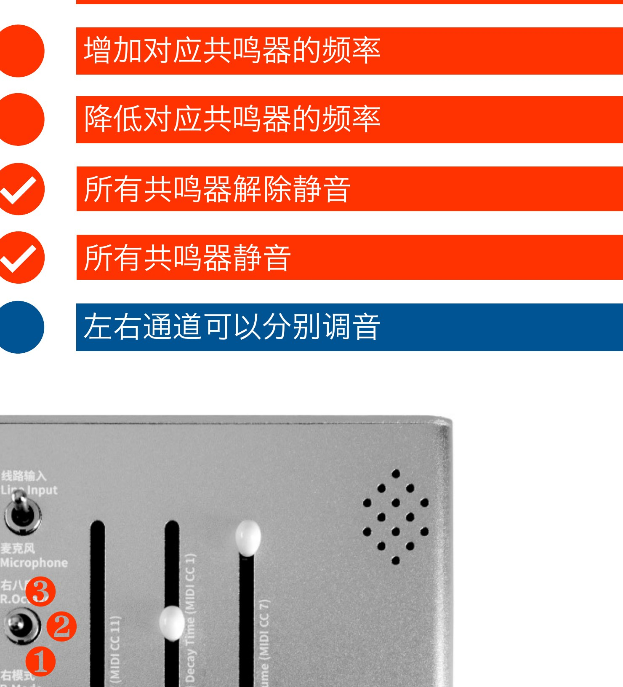
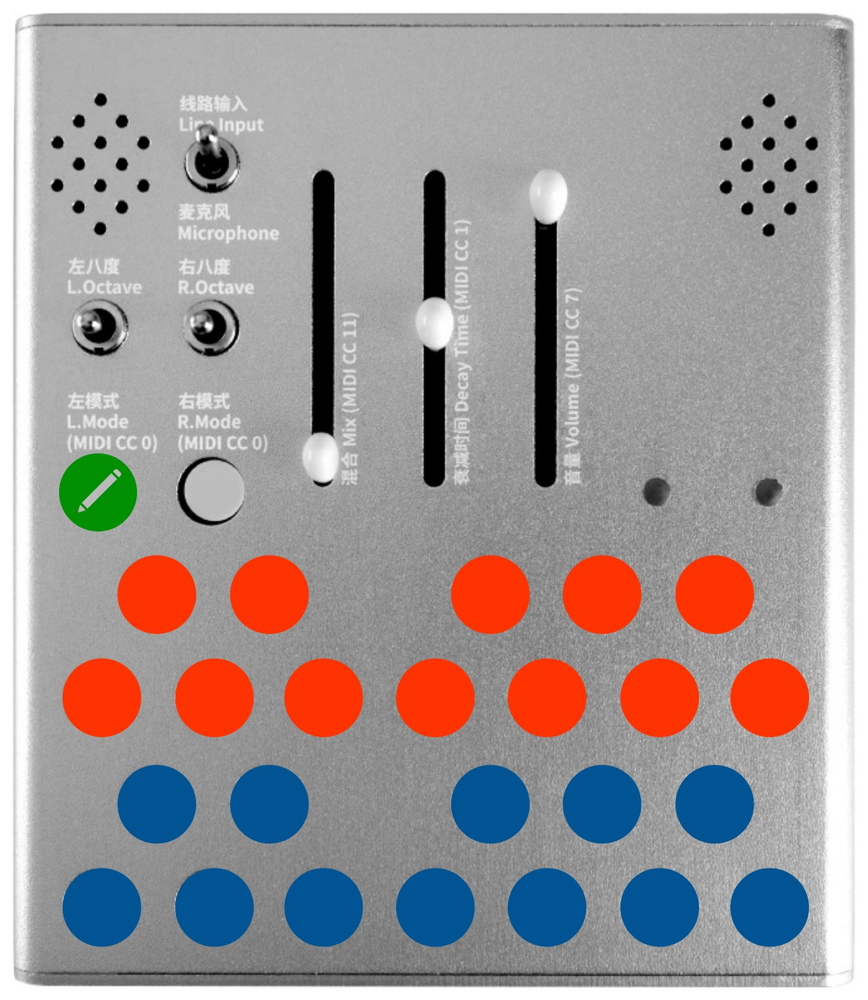
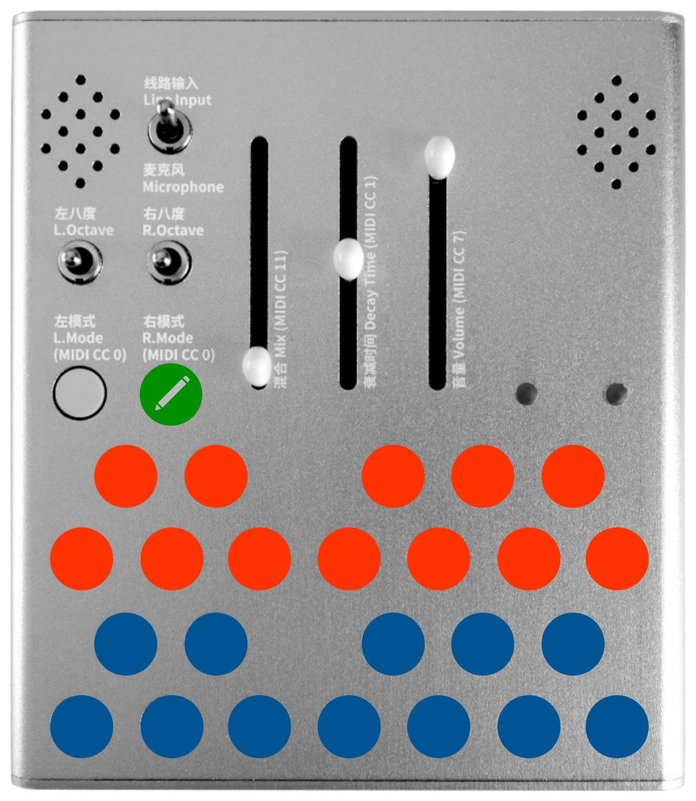
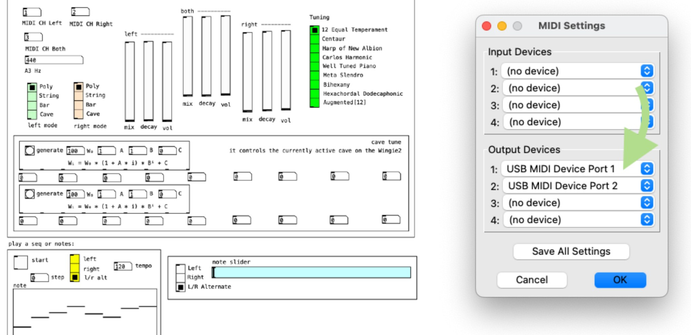

注意
- 设备启动时，请从低音量起步，逐渐调大音量；
- 本设备易与音箱和耳机产生回授，注意避免刺耳高频；
- 存放与使用请置于干燥处，远离潮湿；
- 请勿直接输入模块合成器或其他高电平信号。
感谢购买小羽二代！
小羽二代是一个手持立体声共鸣器，它自带麦克风，可以即时与人声和周围的环境产生关系，也可以连接其他设备，或作为开发平台使用。其体量轻巧，易于携带。让你随时随地创作音乐、探索声音。
小羽使用 USB Type-C 口进行供电。可以使用充电器或充电宝供电。第一批小羽二代（2022 年 5 月之前生产，背后没有螺丝）不可使用 C-C 线，只可使用 A-C 线。
如果输出出现数字噪音，可以尝试更换电源或使用地线隔离器。
接通电源之后，会有大概 3 秒钟的时间从静音到全音量淡入。
小羽灵敏的麦克风拾取空气中的声音，非常容易与扬声器产生回授。你可以演奏回授。v4 版本固件（带有第五种比例模式的）拥有抗啸叫功能，回授仍然可以建立，但是会大幅降低失真、得到柔和音质。不想要回授可以使用耳机，注意控制音量以避免与耳机回授。
你可以使用小羽聆听身边的声音，把小羽当作一个打击乐器来使用，或者用它把任何物体变成一件乐器。开动脑筋，尽情实验。
小羽的音频输入是立体声 3.5mm 接口（TRS）。
注意：避免过大的输入信号。过大的输入信号会使过载的原声出现在输出中。如果在音源选择切换到麦克风时，或在干湿比设定为 100% 时，仍然可以听到线路输入的声音，就说明线路输入信号过大了。这时请调低输入信号电平（不是小羽上的推子）。
小羽的音频输出是立体声 3.5mm 接口（TRS）。可直接驱动耳机。
控制功能已经被标注在小羽上。
混合与音量都控制共鸣器前的信号强度，这个设计允许共鸣器的衰减段可以被完整听到。
当左右声道拥有相同的八度设定时，右声道比左声道高一个八度。
| 推杆 | 功能 |
|---|---|
| 混合 | 干湿声音比例 |
| 衰减 | 共鸣器的衰减时长，从 0.15 秒到大约 10 秒 |
| 音量 | 输入音量 |
小羽拥有 五种 模式，按下模式按键循环选择。当前模式通过 LED 显示。
| 模式 | 复音数 | 音符键盘 | 八度开关响应 | LED |
|---|---|---|---|---|
| 复音（白色） | 三复音 | 按键循环控制每个复音 | 影响下一个按下的音符。可以在演奏音符之前切换八度，以混合不同八度的音符 | 白 |
| 琴弦（黄色） | 单复音 | 同时按下多个音符按键设定音序；每当输入音量超过阈值时音序步进 | 即时 | 黄 |
| 音块（红色） | 单复音 | 同上 | 即时 | 红 |
| 山洞（紫色） | 九共鸣器（三个八度档切换） | 见第 5 章 | 切换山洞（一共三个） | 紫 |
| 比例（四色循环闪烁） | 三复音 | 按键循环控制每个复音；共鸣器频率 = 基频 × 比例 | 影响下一个按下的音符 | 四色循环闪烁 |
全局调音影响 复音、琴弦、音块、山洞 和 比例 五个模式。（出厂设定 A3 (69) = 440 Hz）。如需进行全局调音，请见第 13 章。
比例模式是 v4 新增的第五种模式。与按八度堆叠的复音/琴弦/音块不同，比例模式让每个共鸣器的频率等于 基频 × 比例，因此可以产生非八度音程的共鸣关系。
进入比例模式有三种方式：
山洞模式下，每个声道有 9 个共鸣器，分为三个八度档（bank）。可以逐个调整每个共鸣器的频率和静音状态。

频率范围 16.00–16000.00 Hz，分辨率 0.01 Hz。频率既可由面板在山洞模式下调节，也可由 MIDI CC（第 13 章）或 USB 网页配置 调节。
琴弦和音块模式下，每当输入音量超过阈值时音序步进。阈值可左右分别设置。
在面板上设定：按住对应声道的模式按键，再按音符按键选择阈值。按键从 C 到 B 按半音阶排列，对应 12 档——C 为最低，B 为最高。

阈值也可由 MIDI CC 或 USB 网页配置 设置（对应"输入阈值"字段）。
过载效果器（clipper）的前级和后级增益可以分别调节：
在面板上设定：按住对应声道的模式按键，再按音符按键选择增益。按键从 C 到 B 按半音阶排列，对应 12 档——C 为最低，B 为最高。

调节前级增益获得想要的音色，然后调节后级增益获得舒适的干湿比控制响应。
增益也可由 MIDI CC 或 USB 网页配置 设置。
小羽可以被 MIDI 控制。MIDI 接口按照 MMA 标准设计，请使用标准 MIDI 连线。

| MIDI 通道 | 音符 | 控制信息（CC） |
|---|---|---|
| 用户可调（出厂设定 1、2、3） | 控制左声道 控制右声道 交替控制左右声道 |
控制左声道 控制右声道 同时控制左右声道 |
出厂默认：左声道 = 通道 1，右声道 = 通道 2，左右共用 = 通道 3。可在 USB 网页配置 或通过 MIDI CC（第 13 章）修改。
CC 0 — 模式选择（v4 五模式均分）：
| CC 0 值 | 模式 |
|---|---|
| 0–25 | 复音 |
| 26–51 | 琴弦 |
| 52–76 | 音块 |
| 77–102 | 山洞 |
| 103–127 | 比例 |
v4 起 CC 0 由原来的四档（0-31 / 32-63 / 64-95 / 96-127 + 127 单点）改为五模式均分。如果你之前用固定 CC 值切模式，请按上表重新核对。
推杆 CC：
| CC | 功能 |
|---|---|
| CC 11 (MSB) / CC 43 (LSB) | 混合（干湿比） |
| CC 1 (MSB) / CC 33 (LSB) | 衰减时间 |
| CC 7 (MSB) / CC 39 (LSB) | 音量 |
https://mengqimusic.github.io/Wingie2 打开后选择"配置"，即可用浏览器通过 USB 直接连接小羽，修改和保存所有设置。它不需要 Wi-Fi、SoftAP、CDN、Node 或 Python，只需要一个支持 Web Serial 的浏览器。
连接后，页面会读取一次完整设备快照。你可以修改以下设置，每次有效编辑都立即作用于正在运行的声音，不需要 Apply：
页面不显示混合、衰减、音量——它们是面板上的实体推杆，不写入闪存。
改好的声音只有在点击 "Save to Flash" 并确认后，才会写入闪存、在重启后保留。在此之前，所有改动只影响当前运行状态。
如果小羽的面板控件、MIDI 或其他软件改变了设备状态，页面会在空闲时自动把变化同步过来。你也可以随时点击 Refresh 立即重读。
若页面放在 iframe 中，iframe 需要 allow="serial"，服务器也必须允许相应的 Permissions-Policy: serial=(self)。
MPE（MIDI Polyphonic Expression）让支持 MPE 的控制器对小羽的每个音做独立的弯音控制。v4 的 MPE 由 USB 网页配置 的开关控制，出厂默认关闭，状态保存在闪存。
没有 Zone。通道 1–16 全部走可配置的常规左 / 右 / 共用路由（出厂默认 1 / 2 / 3）。通道 13 调律、14 / 15 山洞频率、16 全局设置 CC 都可以正常使用。
一个 Lower Zone 占用全部通道：Manager = 通道 1，Member = 通道 2–16。
开启 MPE 后，常规的左 / 右 / 共用路由不再适用，通道 13–16 的控制 CC 也被 Zone 接管（调律用逐音 Pitch Bend，山洞 / 全局设置走网页配置）。
当前 MPE 实现范围是 Zone、逐音归属和 Pitch Bend，不映射 Channel Pressure 和 CC 74。双 Zone 控制器的两个 Zone 都会并入小羽的单 Zone。
详见 MPE.md 与 ALT_TUNING.md。
https://mengqimusic.github.io/Wingie2 打开后选择"固件安装"，即可安装或升级小羽固件。刷机页直接连接 ESP32 ROM bootloader，因此适用于空白 Flash、旧版本升级，以及应用固件损坏但 bootloader 正常的设备。
标准刷机只写四个固定区域（bootloader、分区表、boot_app0、应用固件），不执行整片擦除，不读取 app0，也不写 0x9000 开始的 NVS。这意味着你的 MIDI 通道、调律、山洞、比例等设置在标准刷机后全部保留。
恢复出厂设置或擦除配置不属于此页面的标准流程。
默认情况下，小羽使用标准的西方律制（十二平均律）。
从 v3.1 版本开始，额外提供了八种律制（其他律制可以通过更改源代码实现）：
有三种方式可以启用替代律制：
替代律制还会影响山洞模式（见第 15 章），并受全局调音（A3 频率）的影响。
按住左侧的模式按钮并插入 USB 线。推子的位置将确定调音方式：
| 左模式按键 | 右模式按键 | 左推子 | 中推子 | 右推子 | 律制 |
|---|---|---|---|---|---|
| 松开 | 按住 | — | — | — | 十二平均律 |
| 按住 | 松开 | 底部 | 底部 | 底部 | Centaur |
| 按住 | 松开 | 底部 | 底部 | 顶部 | Harp of New Albion |
| 按住 | 松开 | 底部 | 顶部 | 底部 | Carlos Harmonic |
| 按住 | 松开 | 底部 | 顶部 | 顶部 | Well Tuned Piano |
| 按住 | 松开 | 顶部 | 底部 | 底部 | Meta Slendro |
| 按住 | 松开 | 顶部 | 底部 | 顶部 | Bihexany |
| 按住 | 松开 | 顶部 | 顶部 | 底部 | Hexachordal Dodecaphonic |
| 按住 | 松开 | 顶部 | 顶部 | 顶部 | Augmented[12] |
有关调弦的更多信息，请参阅 wingie_tuning_notes.pdf。
| 通道 | CC | 数值 | 律制 |
|---|---|---|---|
| 13 | 23 | 0 | 十二平均律 |
| 1 | Centaur | ||
| 2 | Harp of New Albion | ||
| 3 | Carlos Harmonic | ||
| 4 | Well Tuned Piano | ||
| 5 | Meta Slendro | ||
| 6 | Bihexany | ||
| 7 | Hexachordal Dodecaphonic | ||
| 8 | Augmented[12] |
由 Dave Seidel 提供的 TouchOSC 模板：wingie_tuning.tosc。
MIDI 通道、全局调音、替代律制和山洞模式共鸣器频率可以通过 MIDI 全局设置通道（通道 16）设定，也可以通过 USB 网页配置 设定。
大范围频率跳动会引发大音量声音，调节之前请降低音量和衰减时间。
| MIDI 通道 | MIDI 控制器 | 功能 | 出厂设定 |
|---|---|---|---|
| 16 | 20 | 左声道对应 MIDI 通道 | 1 |
| 21 | 右声道对应 MIDI 通道 | 2 | |
| 22 | 左右声道共用 MIDI 通道 | 3 | |
| 23 (MSB) / 55 (LSB) | 全局调音（以 440 Hz 为中心，可调范围 ±81.92 Hz，分辨率 0.01 Hz） | 0.00 | |
| 15 | 23–31 (MSB) / 55–63 (LSB) | 右声道当前所选山洞调音 | — |
| 14 | 23–31 (MSB) / 55–63 (LSB) | 左声道当前所选山洞调音 | — |
| 13 | 23 | 替代律制（0–8，见第 12 章） | 0 |
有两种方式把当前设置写入闪存，重启后保留：
存储的内容包括：A3 频率、调律、前级 / 后级增益、三个 MIDI 通道路由、左右模式与输入阈值、共享比例设定、左右各 3 个山洞 bank 的频率和静音状态，以及 MPE 开关。
用替代调弦时，山洞也会被调整以匹配您选择的调弦。
为了适应所有 12 个音高，在山洞模式中，左声道对应偶数音，覆盖一个又三分之一的八度音程：
C, D, E, F#, G#, A#, C', D', E'
右声道对应奇数音，同样覆盖一个又三分之一的八度音程：
C#, D#, F, G, A, B, A#, C#', D#', F'
三个位置切换开关切换三个八度音程，类似于复音、琴弦和音块模式。然而，左右山洞始终处于同一个八度音程，因此所有音阶音高都覆盖在两侧。
Dave Seidel 为小羽写了替代律制功能。
……（更多玩法由你探索）
感谢 Roy Parvin 撰写英文介绍及校对说明书，安琪撰写小羽背面赠言，Dave Seidel 为小羽写了替代律制功能。
v4 相对 v3.1 的主要变化：